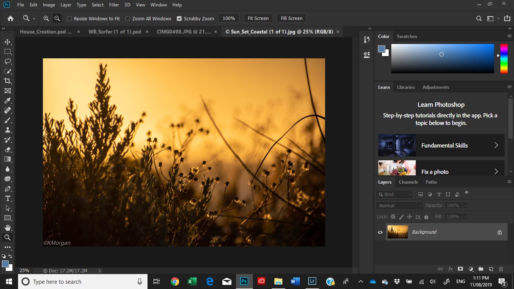
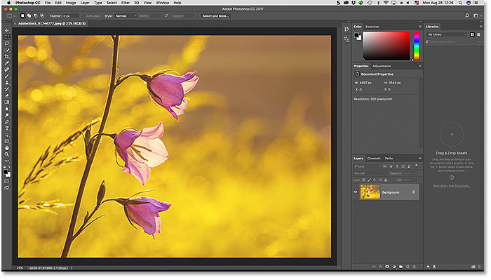

Adobe Photoshop is a raster graphics editor developed and published by Adobe Inc. for Windows and macOS. It was originally created in 1988 by Thomas and John Knoll. Since then, the software has become the industry standard not only in raster graphics editing, but in digital art as a whole. The software's name has thus become a generic trademark, leading to its usage as a verb (e.g. "to photoshop an image", "photoshopping", and "photoshop contest") although Adobe discourages such use. Photoshop can edit and compose raster images in multiple layers and supports masks, alpha compositing and several color models including RGB, CMYK, CIELAB, spot color, and duotone. Photoshop uses its own PSD and PSB file formats to support these features. In addition to raster graphics, Photoshop has limited abilities to edit or render text and vector graphics (especially through clipping path for the latter), as well as 3D graphics and video. Its feature set can be expanded by plug-ins; programs developed and distributed independently of Photoshop that run inside it and offer new or enhanced features. Photoshop's naming scheme was initially based on version numbers. However, in October 2002 (following the introduction of Creative Suite branding), each new version of Photoshop was designated with "CS" plus a number; e.g., the eighth major version of Photoshop was Photoshop CS and the ninth was Photoshop CS2. Photoshop CS3 through CS6 were also distributed in two different editions: Standard and Extended. With the introduction of the Creative Cloud branding in June 2013 (and in turn, the change of the "CS" suffix to "CC"), Photoshop's licensing scheme was changed to that of software as a service rental model. Historically, Photoshop was bundled with additional software such as Adobe ImageReady, Adobe Fireworks, Adobe Bridge, Adobe Device Central and Adobe Camera RAW. Alongside Photoshop, Adobe also develops and publishes Photoshop Elements, Photoshop Lightroom, Photoshop Express, Photoshop Fix, Photoshop Sketch and Photoshop Mix. As of November 2019, Adobe has also released a full version of Photoshop for the iPad, and while initially limited, Adobe plans to bring more features to Photoshop for iPad. Collectively, they are branded as "The Adobe Photoshop Family". Source Wikipedia

Adobe Photoshop Technical Setup Details
• Software Full Name: Adobe Photoshop CC
• Setup File Name: Adobe_Photoshop_CC_v22.3.0.49x64_Multilingual.rar
• Full Setup Size: 2.3 GB
• Setup Type: Offline Installer / Full Standalone Setup
• Compatibility Architecture: 64 Bit (x64)
• Latest Version Release Added On: 18th Mar 2021
• Developers: Adobe
Below are some noticeable features which you’ll experience after Adobe Photoshop free download.
• Design and editing graphic.
• Simple and easy to use.
• Fast and quick operations.
• Add and correct colours.
• Blurr Backgrounds, add images.
• Various different advanced editing tools.
• Popular and widely used.
• Create logos, Web UI Designs and more.

Click on below button to start Adobe Photoshop Download. This is complete offline installer and standalone setup for Adobe Photoshop.